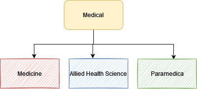
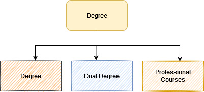

Wondering what after 12th?
‘What after 12th ?’ is the common question among the generation of students studying in 12th standard. Choosing a course shall never be a convenient option rather it should be a highly motivating choice for the students. Interests, motivation, and goals are prime factors students must consider while choosing a course from the range of courses available in India to pursue after 12th.
Given below is the list of courses that can help students make an informed and great choice aligning with their interest and career aspirations after passing secondary class.
Engineering
Duration 4 years.
Eligible after MPC in 12th.
B.E / B.Tech
B.E / B.Tech is a graduate level program done directly after a student's 10+2. After a student's 12th exam, the candidate has to appear for any state or national level engineering entrance through which he or she will get admittance into an engineering college.
B.E. is considered a knowledge oriented course where more emphasis is given on the theoretical part of the curriculum
B. Tech is skill oriented which gives more emphasis on practicals
Career options in Engineering.
- CSE
- IT
- ECE
- EEE
- Civil Engineering
- Chemical Engineering
- Aeronautical Engineering
- Agricultural Engineering
- Autombile Engineering
- Bio-medical Engineering
- Cermaic Engineering
- Industrial Engineering
- Environmental Engineering
- Marine Engineering
- Mining Engineering
- Skills & Textile Engineering
Entrance Tests
- EAMCET ap eamcet website →
- IIT website →
- AIEEE website →
- BITSAT..etc website →
Medical
Eligible after BiPC in 12th.

Medicine
Duration 5 years
Carrer Options in Medicine
- MBBS-Allopathic
- BUMS-Unani
- BHMS-Homeopathy
- BNYS-Naturopathy
- Ag.BSc-AGricultural
- BDS-Dental
- BVSc-Veterinary
- BPT-Physiotheropy
Allied Health Sciences & Career options
Duration 2-3 years
- B.Pharma
- Bsc. Nursing
- BOT-Occupation therapy
- BSc-Anesthesia Tec
- ABs.Cardiac Tec
- BSc-Medical Lab Tec
- BSc-Radion Therapy Tec
- BSc-Clical Optometry
- BSc-Nuclear Medicine
- BSc-Operation Theatre
- BSc-Physican assistant
- Bsc-Respiratory care
- BMLIT-Medical Lab Technology
Paramedical
Duraion 2 years
- Dialysis Techinincian
- ECG Techinincian
- X-Ray technician
- Operation Theatre Techinincian
Degree
Students who have an interest in technical , they can choose engineering courses and the rest who want to opt learning with lesser duration can choose from the courses listed below
Degree
Duration 3 years
-
BA
- BA-HEP
- BA-HTP
- BA-:inguistics
- BA-Economics
- BA-Psychology
- BA-Fin arts
- BA-Political Sci
- BA-Sociology
- BA-Library Sci.
-
B.Sc
- B.Sc-MPC
- B.Sc-MEC
- B.Sc-Appli.Math
- B.Sc-BZC?CBZC
- B.Sc-CPZ
- B.Sc-Horticulture
- B.Sc-Computer Science
- B.Sc-Home Science
- B.SC-Bio chemistry
- B.Sc-Micro Bio
- B.Sc-Bio-Tec
- B.Sc-AnthroP.
- B.Sc-Dairy Sci
-
B.Com
- B.Com-Regular
- B.Com-Computers
- B.Com-Bank Mana
- B.Com-Tax Proce
-
other
LLB
- BBA
- BCA
- BBM
- BAF
- BFM
- BMS
Dual Degree
Duration 4 years
- BA+Bed
- BSc+Bed
- BA+LLB
- Bcom+LLB
- BBm+LLB
- BBa+LLB
Professional Courses
- ICWA
- CS
- CA
- CPT
- ATC(9 months)
- IPCC
- CPT
- ITT(100 hours)
- ARticle ship(Work under CA)
- Clear Final Exma(Become a CA)
NDA
Duration upto 4.5 years of training
The National Defence Academy (NDA) is the joint defence service training institute of the Indian Armed Forces, where cadets of the three services i.e. the Indian Army, the Indian Navy and the Indian Air Force train together before they go on to respective service academy for further pre-commission training. The NDA is located in Khadakwasla, Pune, Maharashtra. It is the first tri-service academy in the world. Choices are
Army
Navy
Airforce
Diploma Courses
There are various kinds of diploma available: from graduate to postgraduate and advanced diplomas. Diplomas serve a multitude of purposes for different students: they are sometimes used to bridge the gap between different phases of academic study, or to provide additional professional training and qualifications.
Career options in Diploma
- Foreign Languages
- Fire Safety
- Journalism
- Home Science
- Tourism
- Hotel management
- Rural development
-
Designing
- Fashion
- Interior
- Jewelry
-
Filmmaking
- Direction
- Screen Writing
- Cinematography
- Sound designee
- Editing
- Action
-
Management
- Finance management
- event management
- Hotel management
The following are the list of courses that one can choose
- • Bachelor Hotel Management and Catering Technology(B.H.M.C.T)
- • Bachelor of Architecture (B.Arch)
- • Bachelor of Arts (B.A)
- • Bachelor of Ayurvedic Medicine and Surgery(B.A.M.S)
- • Bachelor of Business Administration (B.B.A)
- • Bachelor of Business Management (BBM)
- • Bachelor of Business Studies(B.B.S)
- • Bachelor of Commerce (B.Com)
- • Bachelor of Computer Applications (B.C.A)
- • Bachelor of Dental Surgery (B.D.S)
- • Bachelor of Design(B.Des)
- • Bachelor of Education (B.Ed)
- • Bachelor of Elementary Education(B.EL.Ed)
- • Bachelor of Engineering (B.E) / Bachelors of Technology (B.Tech)
- • Bachelor of Fashion Technology (B.F.Tech)
- • Bachelor of Fine Arts(B.F.A)
- • Bachelor of Homeopathic Medicine & Surgery (B.H.M.S)
- • Bachelor of Hospitality and Tourism Management(B.H.T.M)
- • Bachelor of Hotel Management(B.H.M)
- • Bachelor of Law (LL.B)
- • Bachelor of Medicine Bachelor of Surgery (M.B.B.S)
- • Bachelor of Optometry and Vision Science(B.Optom)
- • Bachelor of Pharmacy (B.Pharma)
- • Bachelor of Physical Education (B.P.Ed)
- • Bachelor of Physiotherapy(B.P.T)
- • Bachelor of Science Education(B.S.E)
- • Bachelor of Science in Education(B.Sc.Ed)
- • Bachelor of Science (B.S / B.Sc)
- • Bachelor of Siddha Medical Sciences(B.S.M.S)
- • Bachelor of Socio Legal Sciences Bachelor of Laws(B.S.L.LL.B)
- • Bachelor of Tourism Administration(B.T.A)
- • Bachelor of Unani Medicine & Surgery(B.U.M.S)
- • Bachelor of Veterinary Science (B.V.Sc)
Integrated Courses
- • Bachelor of Arts Bachelor of Education (B.A B.Ed)
- • Bachelor of Arts Bachelor of Law (B.A LLB)
- • Bachelor of Business Administration Bachelor of Law (BBA LLB)
- • Bachelor of Science Bachelor of Education (B.Sc B.Ed)
- • Bachelor of Science Degree in Nursing (B.Sc Nursing)